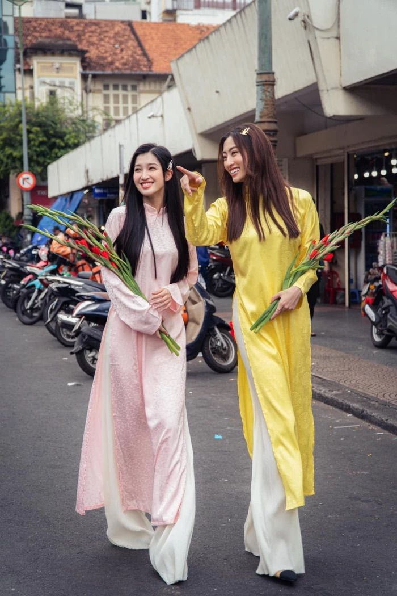

"Áo Dài"
Der Ao Dai ist ein traditionelles vietnamesisches Kleidungsstück, das als Symbol für die Schönheit und Anmut vietnamesischer Frauen gilt. Der Ao Dai ist nicht nur ein traditionelles Kleidungsstück, sondern auch ein Symbol für Kultur und nationalen Stolz. Zu festlichen Anlässen, Gedenktagen oder wichtigen Ereignissen tragen Vietnamesen oft Ao Dai, um die Tradition zu zeigen und die Schönheit der Nation zu ehren. Darüber hinaus ist der Ao Dai auch in der modernen Mode beliebt, mit vielen Varianten und Kombinationsmöglichkeiten, um den aktuellen Trends und individuellen Stilen gerecht zu werden. Der Ao Dai ist nicht nur ein wichtiger Bestandteil der vietnamesischen Kultur, sondern auch ein Symbol für Eleganz und Klasse in der internationalen Modewelt."Múa rối nước"
"Múa rối nước" ist eine traditionelle vietnamesische Kunstform, bei der Marionetten auf Wasser mit den Händen gesteuert werden. Diese Kunst wird oft bei Messen, Festivals und kulturellen Veranstaltungen aufgeführt. Múa rối nước erzählt Volksmärchen, kulturelle Traditionen und die Geschichte des Landes durch die sanfte und flexible Bewegung der Marionetten. Es ist nicht nur eine Unterhaltungsform, sondern auch ein wichtiger Teil des kulturellen Erbes und der Kunst Vietnams, das Bildung bietet und die nationale Identität bewahrt."Trò chơi dân gian"
"Các trò chơi dân gian Việt Nam sind traditionelle Unterhaltungsaktivitäten, die in der Gemeinschaft durchgeführt werden, oft an öffentlichen Orten wie Schulhöfen, Gärten oder Gassen. Diese Spiele haben oft einen gemeinschaftlichen Charakter und fördern den Zusammenhalt innerhalb der Gemeinschaft. Hier sind einige Beispiele für vietnamesische Volksspiele:- Ô ăn quan: Ein Spiel des Verstandes und der Strategie, bei dem die Spieler die Spielsteine auf dem Spielbrett bewegen, um alle Steine des Gegners zu erobern. Volksspiele sind nicht nur eine Form der Unterhaltung, sondern zeigen auch den kulturellen Reichtum und den Gemeinschaftssinn der vietnamesischen Menschen.